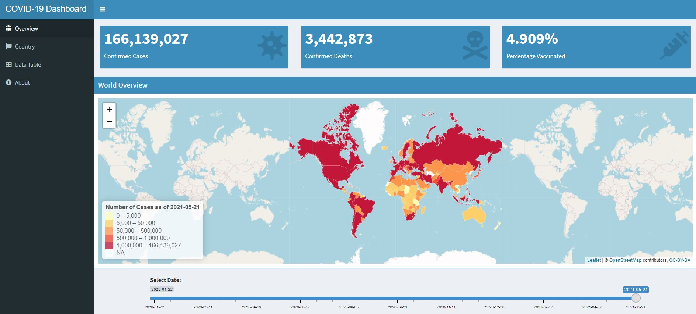

During this pandemic, most of the reports which we get are often through the media. However, these reports tend to be inaccurate and inconsistent as they tend to cherry-pick the statistics and graphs to generate attention grabbing headlines.
To get an accurate and reliable picture of the current impact of COVID-19, we should pull the data directly from a reliable source and analyze it.
For this project, we will obtain data directly from Our World in Data which relies on data from Johns Hopkins University and visualize them through a Shiny App.
The Shiny App can be found at this link: (https://dillonchewwx.shinyapps.io/coursera-ddp-project2/) and the next few slides will explain how the dashboard works.
Reproducible Pitch Presentation
Coursera - Developing Data Products Project
Dillon Chew
23 May 2021
Introduction
Dashboard Outline

Dashboard Description
The Overview tab provides a global outlook with key figures and map/graph visualizations. There is also a slider bar included to view the data for certain dates. The
shinydashboardpackage was used to build the UI and the map was rendered usingLeaflet.The Country tab allows the user to select the country of interest and shows the key statistics and graphs. The plots are rendered with
Plotlyand thus are interactive.The full data table for generating the visualizations can be explored in the Data Table tab. The
DTpackage was used to generate the HTML table.The About tab contains information about the project and the developer.
Plot examples
- Line graphs highlighting the global trend from when the pandemic started are shown here.